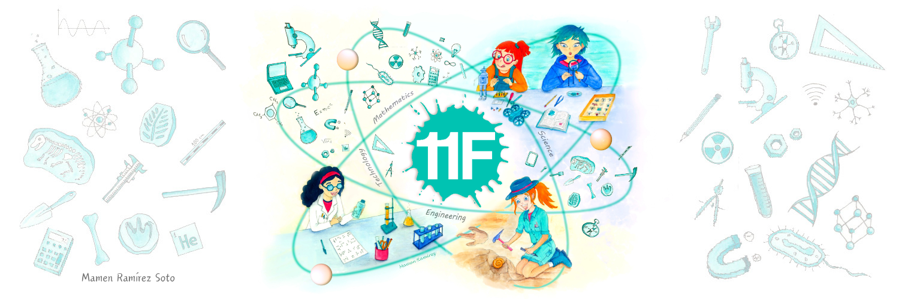

la mujer en la ciencia su evolucion
La igualdad de género ha sido siempre un tema central de las Naciones Unidas. La igualdad entre los géneros y el empoderamiento de las mujeres y las niñas contribuirán decisivamente no solo al desarrollo económico del mundo, sino también al progreso respecto de todos los objetivos y metas de la Agenda 2030 para el Desarrollo Sostenible. El 14 de marzo de 2011, la Comisión de la Condición Jurídica y Social de la Mujer aprobó el informe en su 55º período de sesiones, con las conclusiones convenidas sobre el acceso y la participación de la mujer y la niña en la educación, la capacitación y la ciencia y la tecnología, incluida la promoción de la igualdad de acceso de la mujer al pleno empleo y a un trabajo decente. El 20 de diciembre de 2013, la Asamblea General aprobó la resolución relativa a la ciencia, la tecnología y la innovación para el desarrollo, en que reconoció que el acceso y la participación plenos y en condiciones de igualdad en la ciencia, la tecnología y la innovación para las mujeres y las niñas de todas las edades eran imprescindibles para lograr la igualdad entre los géneros y el empoderamiento de la mujer y la niña. La Asamblea General declaró el 11 de febrero Día Internacional de las Mujeres y las Niñas en la Ciencia en reconocimiento al papel clave que desempeñan las mujeres en la comunidad científica y la tecnología. En su resolución del 22 de diciembre de 2015, el órgano de las Naciones Unidas dónde están representados todos los Estados Miembros aprobó una resolución en la que justificaba la proclamación de este Día Internacional y alababa las iniciativas llevadas a cabo de la Organización de las Naciones Unidas para la Educación, la Ciencia y la Cultura (UNESCO), la Entidad de las Naciones Unidas para la Igualdad de Género y el Empoderamiento de las Mujeres (ONU Mujeres), la Unión Internacional de Telecomunicaciones (UIT) y otras organizaciones competentes para apoyar a las mujeres científicas y promover el acceso de las mujeres y las niñas a la educación, la capacitación y la investigación en los ámbitos de la ciencia, la tecnología, la ingeniería y las matemáticas.

| Por que podriamos considerarque la participacion de las mujeres cientificas | como el desarrollo cientificoy tecnologico teayudaa mejorar tu vidapersonal | como el desarrollo cientifico y tecnologico te ayudaa desarrollar tu potencial | por que crees que es importante la participacion de la mujer cientificaen la sociedad |
|---|---|---|---|
| hoy por hoy la participacion de la mujer ha sido importante en diferentes campos lo que ha permitido avances significativos en el logro de la equidaddegenero. | los exitos de la ciencias , en su alianza con la tecnologia son indudables .nos han proporcionados una gran capacidad paraexplica,controlary transformarel mundo | si nos ayudaa mejorar nuestro potencial intelectual , ofreciendonos informacion sobre dudas sin limitaciones algunaso algun obstaculos respetitivo | es importante por que como ella es un ser vivo y cada persona puede seguir evolucionando por lo que con la ayuda de la mujer nosotros como sociedad podremos aprender y descubrir nuevas cosas |
las mujeres y la evolucion
En 2018, las mujeres representaban un tercio (33%) de los investigadores del mundo. Habían logrado la paridad numérica en ciencias de la vida en muchos países y, en algunos de ellos, eran predominantes en este campo. Sin embargo, su proporción entre los doctores en ingeniería y en informática solamente ascendía a un 28% y un 40%, respectivamente. Además, solamente representaban un 22% de los profesionales que trabajaban ese año en el ámbito de la Inteligencia Artificial (IA). Lo más paradójico es que en esos campos es donde se está impulsando la Cuarta Revolución Industrial y donde se registra al mismo tiempo un déficit de capacidades. Las mujeres siguen siendo minoritarias en los puestos técnicos y directivos de las empresas tecnológicas. En los EE.UU., el sentimiento de sentirse infravaloradas es el principal motivo aducido por las que dejan su trabajo en el sector de las tecnologías.

que declaro la ONU el 11 de febrero
La Asamblea General declaró el 11 de febrero Día Internacional de las Mujeres y las Niñas en la Ciencia en reconocimiento al papel clave que desempeñan las mujeres en la comunidad científica y la tecnología.
COMO APORTAN LAS MUJERES AL DESAROLLO DE LA CIENCIA Y LA TECNOLOGIA
Podemos mencionar a mujeres líderes que han contribuido con avances invaluables, por ejemplo: las premio Nobel de Química Marie Curie y Dorothy Crowfoot Hodgkin, por sus respectivos aportes en el campo de la radioactividad, y en el descubrimiento de las moléculas de penicilina, insulina y vitamina B12
SU IMPORTANCIA
El Día Internacional de la Mujer y la Niña en la Ciencia se estableció en 2015, mediante la Resolución 70/212 de la Asamblea General de la ONU, con el objetivo de promover el acceso y la participación plena y equitativa en la ciencia de las mujeres y niñas en pos de la igualdad y la lucha contra la brecha de género
mujeres protaginista
Con el fin de reflexionar sobre esta fecha, investigadoras de la Facultad aportaron sus testimonios desde diferentes perspectivas que abarcan desde la importancia de la educación familiar, el rol de las docentes investigadoras como generadoras de recursos humanos; hasta la convivencia de la práctica de la ciencia con la maternidad, entre otras. “Es una realidad que la brecha de género en los sectores de Ciencia y Tecnología persiste y la sociedad actual necesita de cambios para lograr la participación equitativa de las mujeres en la ciencia. Las niñas y mujeres deben animarse a recorrer este camino de la ciencia porque ya no es un impedimento social”, sostuvo Romina Russi, docente y becaria en Laboratorio de Inmunología Experimental de la FBCB, y actual presidente de la Asociación Santafesina de Biotecnología. La educación familiar también es un componente trascendente en este cambio de paradigma. Sobre este tema exponen sus historias personales dos graduadas de la FBCB: María Julia Culzoni, licenciada en Biotecnología y doctora en Ciencias Biológicas, docente, distinguida con el Premio Estímulo en Ciencias Químicas 2018; y Carla Teglia, doctora en Ciencias Biológicas, becaria del Consejo Nacional de Investigaciones Científicas y Técnicas (CONICET); ambas parte del equipo que conforma el Laboratorio de Desarrollo Analítico y Quimiometría de la Facultad. “Estas fechas permiten abrir caminos para que las niñas y mujeres puedan acercarse a la ciencia y ver de qué se trata. Como mamá investigadora intento que mi hija Valentina me acompañe al laboratorio donde trabajo, para ver qué hacemos, y así tener una experiencia diferente para que pueda elegir en el futuro conociendo todas las posibilidades”, relata Culzoni. Por su parte Teglia agrega “accedí a la ciencia gracias a que mis padres siempre me inculcaron que daba lo mismo ser hombre o mujer y que podía ser lo que quisiéramos. Hace ocho años que me dedico a la ciencia y reconozco que pertenezco a una generación que tuvo la suerte de tener en épocas anteriores mujeres valientes que lucharon para que yo esté hoy aquí”.